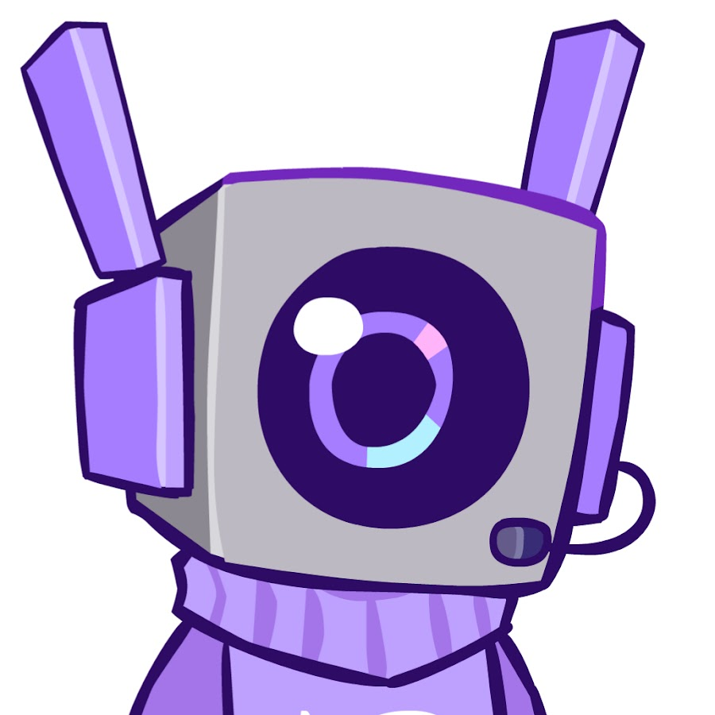
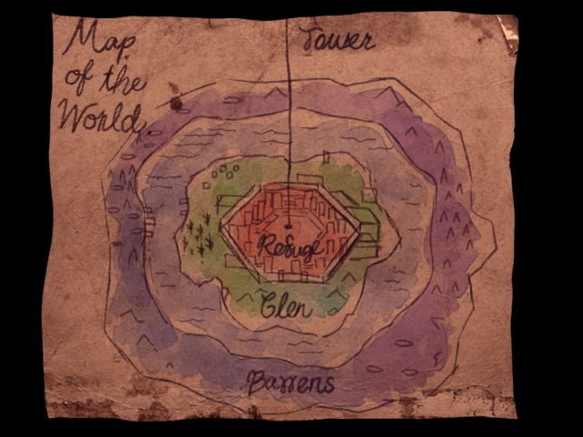
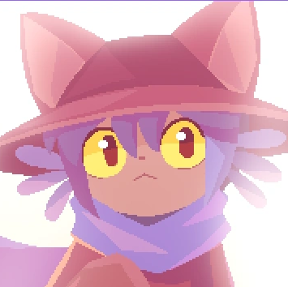
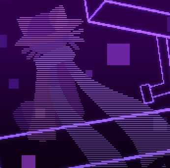
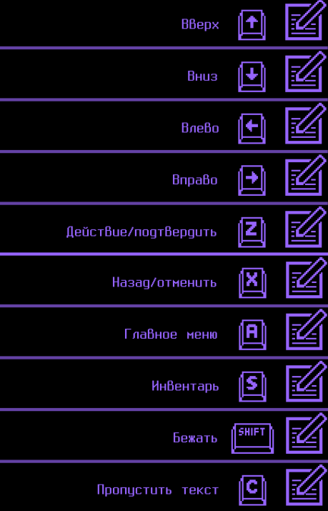
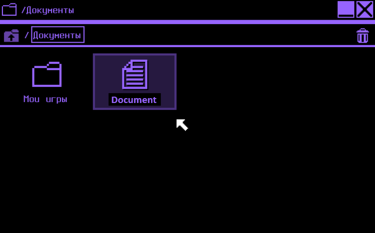
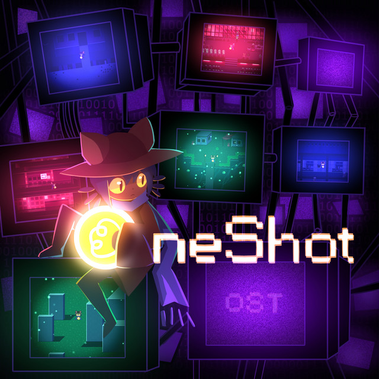
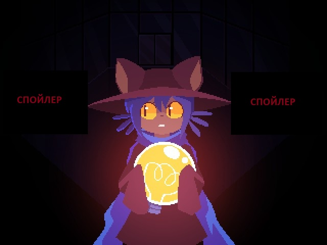
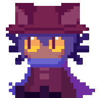

Жанр
Платформы
Разработчик
Пазл / Приключение
PC, Nintendo Switch
Future Cat LLC
История
OneShot — игра, разработанная художницей и геймдизайнером Nightmargin (основательница Future Cat
LLC).
Изначально проект появился как бесплатная игра на RPG Maker XP в 2014 году. Он быстро привлёк внимание
благодаря необычной подаче: игра активно взаимодействовала с компьютером игрока, выходила за рамки
игрового окна и ломала «четвёртую стену».
После успеха оригинала разработчики решили создать
улучшенную и расширенную версию.
Так, 8 декабря 2016 года OneShot была опубликована в Steam, получив обновлённую графику,
дополнительный контент и более стабильный движок.
Позже, благодаря популярности и сильному
комьюнити, игра была портирована на консоли.
22 сентября 2022 года вышла OneShot: World Machine Edition для Nintendo Switch, PlayStation 4 и Xbox
One — эта версия адаптирует уникальные «мета»-механики игры под возможности игровых систем.

Мир
Мир OneShot состоит из трёх областей: Пустоши, Глена и Пристанища.
Пустоши тонут во тьме и
заброшенности
Глен — это лесистая долина с деревнями и древними механизмами.
Пристанище —
последний технологичный город, который медленно разрушается. Все три региона зависят от возвращения
Сферы-Солнца.
- Меланхоличный пиксель-арт
- Мир реагирует на игрока

Основные персонажи

Нико
Главный герой. Ребёнок-«мессия», которому поручено нести Лампу, что выступает светом мира. Неизвестного пола.

Мировая Машина
Самоосознанная программа и интеллект, управляющий симуляцией мира, в котором происходит игра.
⮞ Подробнее тут
Автор
Создатель Мировой Машины и ключевая, хотя и невидимая персона. Человек который не смог смотреть на смерть родного мира
Геймплей
Геймплей представляет собой атмосферную приключенческую головоломку: вы управляете Нико, исследуете мир, собираете и комбинируете предметы, решаете загадки, а также взаимодействуете с виртуальной операционной системой — разгадки часто скрыты в “рабочем столе” игры, что усиливает ощущение метамира.
- Исследуй локации
- Общайся с персонажами
- Решай головоломки и принимай решения

Головоломки
Головоломки в OneShot выходят за рамки стандартных квестов: игроку приходится взаимодействовать не
только с миром Нико, но и с виртуальной операционной системой игры.
В оригинальной версии
часть загадок скрыта за пределами окна игры — нужно менять обои, открывать файлы и манипулировать
окнами на компьютере.
В издании World Machine Edition эти механики реализованы через
эмулированный рабочий стол, где есть приложения, папки, профили персонажей и фоновые картинки, которые
сами становятся частью головоломок.
- Собирай предметы
- Используй операционную систему

Музыка
Саундтрек поддерживает атмосферу игры: тихие, меланхоличные мелодии сменяются резкими акцентами, подчёркивающими важные моменты.

Концовки
В OneShot несколько вариантов концовок, и каждая зависит от действий игрока и его взаимодействия с
миром. Основные типы развязок:
Концовка восстановления — мир получает шанс на новое начало, и свет возвращается.
Тёмная концовка — мир остаётся в опасности или рушится, подчеркивая последствия бездействия.
Мета-/технические концовки — финал меняется в

Ссылки
Понравилась игра? Почитай побольше!
